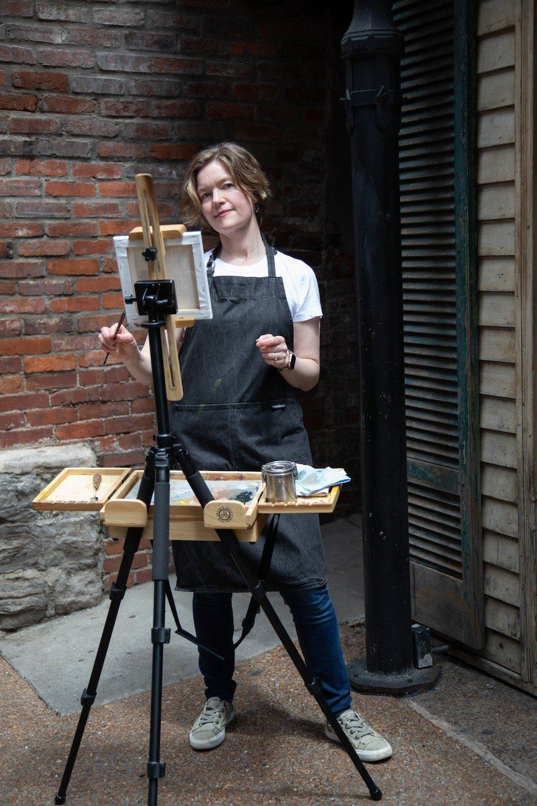

About
Sarah Clinton
Sarah Clinton is a painter based in Nashville, TN working with a variety of media to capture the people, places, and things that hold significance in our lives.
Her artistic journey began after the birth of her daughter, who was diagnosed with a rare genetic disorder (SynGAP1), which causes intellectual disability and other challenges. Navigating the complexities of parenting a child with special needs, painting emerged as a therapeutic outlet for Sarah to process her emotions. Observing her daughter's distinct perspective on the world, Sarah continually reframes her own outlook. This unique lens is applied to her work where she strives to capture the beauty in unnoticed or mundane moments.
Sarah's work was recently showcased in the Soundwaves Gallery at the Nashville Soccer Club's GEODIS Park, and her Nashville-themed pieces were recently displayed in the Flying Solo Exhibition at the Nashville airport. Additionally, her paintings are regularly featured in juried art shows throughout Nashville. As a proud board member of the Chestnut Group, an organization dedicated to plein air painting for land conservation and preservation, Sarah is committed to leveraging her art for positive change.
Sarah was one of 12 artists selected to participate in the inaugural Artist in Residence Program in the historic downtown Nashville Arcade, exhibiting and curating a new show for each monthly art crawl from October 2024 to June 2025.
Selected Exhibitions
- July 3 – September 19 2026Of Wood and Light – A Group Exhibition with the Nashville Painters Salon and the Cumberland Furniture Guild, Sounding Stone Gallery, Monteagle, TN
- June 6 – June 13 2026 (pop-up)Hear, Hear! – A Group Exhibition with the 2024/2025 artists in the Arcade Arts residency program, Tinney Contemporary, Nashville, TN
- August 20 – September 26 2025Neighbors – A Group Exhibition with the 2024/2025 artists in the Arcade Arts residency program, Leu Center for the Arts, Watkins College of Art, Belmont University, Nashville, TN
- Oct 2024-June 2025Curated exhibits each month for the Downtown Art Crawl. Included solo exhibits as well as group exhibits hosting outside artists, 65 Arcade Alley, studio 60, Nashville, TN
- April 2025Curated Debut show 10 artists in the Nashville Painters Salon, Arcade Arts, 65 Arcade Alley Studio 60, Nashville, TN
- February 2025Soundwaves Gallery exhibition juried by Nashville Soccer Club in partnership with the Arts & Business Council of Greater Nashville
- March 2024-June 2024Flying Solo Exhibition at the Nashville International Airport, Concourse D
- October 2023Artclectic, The University School of Nashville, Nashville
- April 2023Fearlessly and Wonderfully Created Fine Art Show, benefitting Saddle Up!, Nashville, TN,
- October 2022Firefly Artisan Fair, Nashville, TN, Best in Show
- September 2022Solo show (online), Art Mums United
- April 2022“Artist, Mother, Proud & Serious” online group exhibit by Art Mums United, curated by Brandi Hofer
Professional activities
- Artist in Residence October 2024- June 2025, Arcade Arts, Nashville, TN
- Board member of The Chestnut Group, a non-profit plein air painting group devoted to conservation
- One of 25 artists selected for the 2021 Class of Periscope: Entrepreneur Training, Arts and Business Council of Greater Nashville
Collections
- Executive Residence Collection, Tennessee State Museum
- Belmont University College of Law
- Montgomery Bell Academy
Memberships
- Portrait Society of America
- American Impressionist Society
- Curator and coordinator, Nashville Painters Salon
Publications
- “A Conversation with Sarah Clinton” on Drawing South Podcast, hosted by Mike Windy, June 2025. Listen here,
- Cole Villena and Laura Hutson Hunter, “A New Perspective,” The Nashville Scene, Volume 44, Number 2, (February 6-12, 2025), 11, Cover art Featured
- The Huts Magazine Issue 5, ART MUMS UNITED artist, mother, proud & serious, Print and online at thehutsmagazine.com/issue-5
- Breaking Ground: Arts Issue 105, TN Council on Developmental Disabilities publication, Feb/March 2021, Print and online at tn.gov/cdd